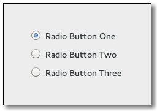

Gtk.RadioButton¶
Example¶

- Subclasses:
None
Methods¶
- Inherited:
Gtk.CheckButton (3), Gtk.ToggleButton (10), Gtk.Button (29), Gtk.Bin (1), Gtk.Container (35), Gtk.Widget (278), GObject.Object (37), Gtk.Buildable (10), Gtk.Actionable (5), Gtk.Activatable (6)
- Structs:
Gtk.ContainerClass (5), Gtk.WidgetClass (12), GObject.ObjectClass (5)
class |
|
class |
|
class |
|
class |
|
class |
|
class |
|
|
|
|
|
|
Virtual Methods¶
- Inherited:
Gtk.CheckButton (1), Gtk.ToggleButton (1), Gtk.Button (6), Gtk.Container (10), Gtk.Widget (82), GObject.Object (7), Gtk.Buildable (10), Gtk.Actionable (4), Gtk.Activatable (2)
Properties¶
- Inherited:
Gtk.ToggleButton (3), Gtk.Button (9), Gtk.Container (3), Gtk.Widget (39), Gtk.Actionable (2), Gtk.Activatable (2)
Name |
Type |
Flags |
Short Description |
|---|---|---|---|
w |
The radio button whose group this widget belongs to. |
Style Properties¶
- Inherited:
Signals¶
- Inherited:
Gtk.ToggleButton (1), Gtk.Button (6), Gtk.Container (4), Gtk.Widget (69), GObject.Object (1)
Name |
Short Description |
|---|---|
Emitted when the group of radio buttons that a radio button belongs to changes. |
Fields¶
- Inherited:
Gtk.ToggleButton (1), Gtk.Button (6), Gtk.Container (4), Gtk.Widget (69), GObject.Object (1)
Name |
Type |
Access |
Description |
|---|---|---|---|
check_button |
r |
Class Details¶
- class Gtk.RadioButton(*args, **kwargs)¶
- Bases:
- Abstract:
No
- Structure:
A single radio button performs the same basic function as a
Gtk.CheckButton, as its position in the object hierarchy reflects. It is only when multiple radio buttons are grouped together that they become a different user interface component in their own right.Every radio button is a member of some group of radio buttons. When one is selected, all other radio buttons in the same group are deselected. A
Gtk.RadioButtonis one way of giving the user a choice from many options.Radio button widgets are created with
Gtk.RadioButton.new(), passingNoneas the argument if this is the first radio button in a group. In subsequent calls, the group you wish to add this button to should be passed as an argument. Optionally,Gtk.RadioButton.new_with_label() can be used if you want a text label on the radio button.Alternatively, when adding widgets to an existing group of radio buttons, use
Gtk.RadioButton.new_from_widget() with aGtk.RadioButtonthat already has a group assigned to it. The convenience functionGtk.RadioButton.new_with_label_from_widget() is also provided.To retrieve the group a
Gtk.RadioButtonis assigned to, useGtk.RadioButton.get_group().To remove a
Gtk.RadioButtonfrom one group and make it part of a new one, useGtk.RadioButton.set_group().The group list does not need to be freed, as each
Gtk.RadioButtonwill remove itself and its list item when it is destroyed.- CSS nodes
radiobutton ├── radio ╰── <child>
A
Gtk.RadioButtonwith indicator (seeGtk.ToggleButton.set_mode()) has a main CSS node with name radiobutton and a subnode with name radio.button.radio ├── radio ╰── <child>
A
Gtk.RadioButtonwithout indicator changes the name of its main node to button and adds a .radio style class to it. The subnode is invisible in this case.- How to create a group of two radio buttons.
void create_radio_buttons (void) { GtkWidget *window, *radio1, *radio2, *box, *entry; window = gtk_window_new (GTK_WINDOW_TOPLEVEL); box = gtk_box_new (GTK_ORIENTATION_VERTICAL, 2); gtk_box_set_homogeneous (GTK_BOX (box), TRUE); // Create a radio button with a GtkEntry widget radio1 = gtk_radio_button_new (NULL); entry = gtk_entry_new (); gtk_container_add (GTK_CONTAINER (radio1), entry); // Create a radio button with a label radio2 = gtk_radio_button_new_with_label_from_widget (GTK_RADIO_BUTTON (radio1), "I’m the second radio button."); // Pack them into a box, then show all the widgets gtk_box_pack_start (GTK_BOX (box), radio1); gtk_box_pack_start (GTK_BOX (box), radio2); gtk_container_add (GTK_CONTAINER (window), box); gtk_widget_show_all (window); return; }
When an unselected button in the group is clicked the clicked button receives the
Gtk.ToggleButton::toggledsignal, as does the previously selected button. Inside theGtk.ToggleButton::toggledhandler,Gtk.ToggleButton.get_active() can be used to determine if the button has been selected or deselected.- classmethod new(group)[source]¶
- Parameters:
group ([
Gtk.RadioButton] orNone) – an existing radio button group, orNoneif you are creating a new group.- Returns:
a new radio button
- Return type:
Creates a new
Gtk.RadioButton. To be of any practical value, a widget should then be packed into the radio button.
- classmethod new_from_widget(radio_group_member)[source]¶
- Parameters:
radio_group_member (
Gtk.RadioButtonorNone) – an existingGtk.RadioButton.- Returns:
a new radio button.
- Return type:
Creates a new
Gtk.RadioButton, adding it to the same group as radio_group_member. As withGtk.RadioButton.new(), a widget should be packed into the radio button.
- classmethod new_with_label(group, label)[source]¶
- Parameters:
group ([
Gtk.RadioButton] orNone) – an existing radio button group, orNoneif you are creating a new group.label (
str) – the text label to display next to the radio button.
- Returns:
a new radio button.
- Return type:
Creates a new
Gtk.RadioButtonwith a text label.
- classmethod new_with_label_from_widget(radio_group_member, label)[source]¶
- Parameters:
radio_group_member (
Gtk.RadioButtonorNone) – widget to get radio group from orNonelabel (
str) – a text string to display next to the radio button.
- Returns:
a new radio button.
- Return type:
Creates a new
Gtk.RadioButtonwith a text label, adding it to the same group as radio_group_member.
- classmethod new_with_mnemonic(group, label)[source]¶
- Parameters:
group ([
Gtk.RadioButton] orNone) – the radio button group, orNonelabel (
str) – the text of the button, with an underscore in front of the mnemonic character
- Returns:
a new
Gtk.RadioButton- Return type:
Creates a new
Gtk.RadioButtoncontaining a label, adding it to the same group as group. The label will be created usingGtk.Label.new_with_mnemonic(), so underscores in label indicate the mnemonic for the button.
- classmethod new_with_mnemonic_from_widget(radio_group_member, label)[source]¶
- Parameters:
radio_group_member (
Gtk.RadioButtonorNone) – widget to get radio group from orNonelabel (
str) – the text of the button, with an underscore in front of the mnemonic character
- Returns:
a new
Gtk.RadioButton- Return type:
Creates a new
Gtk.RadioButtoncontaining a label. The label will be created usingGtk.Label.new_with_mnemonic(), so underscores in label indicate the mnemonic for the button.
- get_group()[source]¶
- Returns:
a linked list containing all the radio buttons in the same group as self. The returned list is owned by the radio button and must not be modified or freed.
- Return type:
Retrieves the group assigned to a radio button.
- join_group(group_source)[source]¶
- Parameters:
group_source (
Gtk.RadioButtonorNone) – a radio button object whos group we are joining, orNoneto remove the radio button from its group
Joins a
Gtk.RadioButtonobject to the group of anotherGtk.RadioButtonobjectUse this in language bindings instead of the
Gtk.RadioButton.get_group() andGtk.RadioButton.set_group() methodsA common way to set up a group of radio buttons is the following:
GtkRadioButton *radio_button; GtkRadioButton *last_button; while (some_condition) { radio_button = gtk_radio_button_new (NULL); gtk_radio_button_join_group (radio_button, last_button); last_button = radio_button; }
New in version 3.0.
- set_group(group)[source]¶
- Parameters:
group ([
Gtk.RadioButton] orNone) – an existing radio button group, such as one returned fromGtk.RadioButton.get_group(), orNone.
Sets a
Gtk.RadioButton’s group. It should be noted that this does not change the layout of your interface in any way, so if you are changing the group, it is likely you will need to re-arrange the user interface to reflect these changes.
- do_group_changed() virtual¶
Signal Details¶
- Gtk.RadioButton.signals.group_changed(radio_button)¶
- Signal Name:
group-changed- Flags:
- Parameters:
radio_button (
Gtk.RadioButton) – The object which received the signal
Emitted when the group of radio buttons that a radio button belongs to changes. This is emitted when a radio button switches from being alone to being part of a group of 2 or more buttons, or vice-versa, and when a button is moved from one group of 2 or more buttons to a different one, but not when the composition of the group that a button belongs to changes.
New in version 2.4.
Property Details¶
- Gtk.RadioButton.props.group¶
- Name:
group- Type:
- Default Value:
- Flags:
Sets a new group for a radio button.